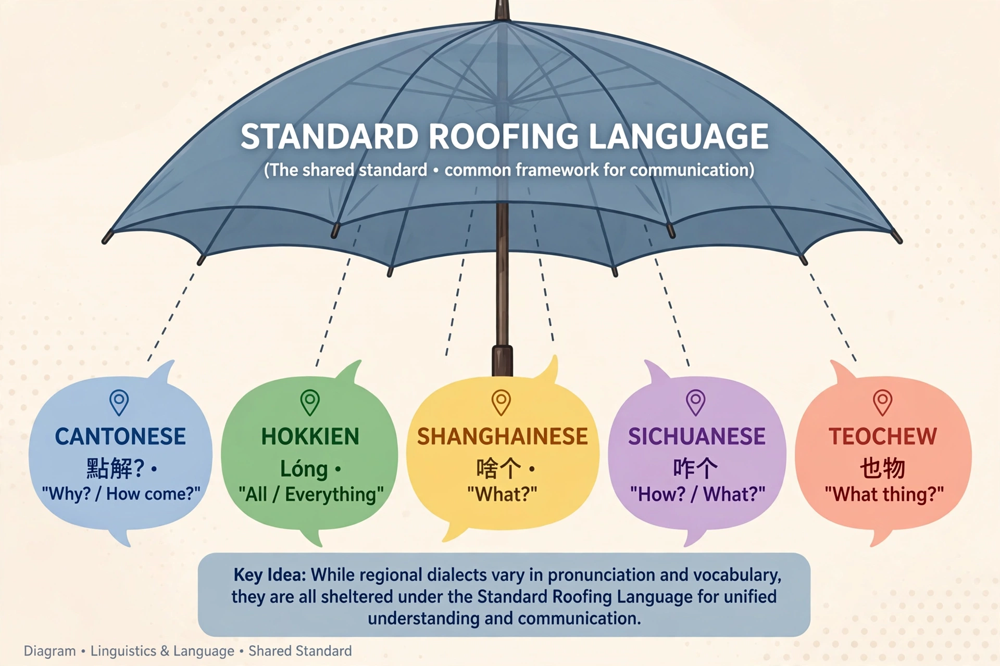

Ausbau, Abstand and Dach languages
| Ausbau / Abstand / Dach | |
|---|---|
| Field | Sociolinguistics |
| Coined by | Heinz Kloss (1952, 1967) |
| Abstand | Structural distance between varieties |
| Ausbau | Deliberate elaboration of a variety into a full standard language |
| Dachsprache | "Roofing" standard language covering related varieties |

In sociolinguistics, the terms Abstand and Ausbau, introduced by the German linguist Heinz Kloss, describe two different grounds on which a variety can count as a separate language. An Abstandsprache ("distance language") is a language by virtue of its intrinsic structural distance from all others — Basque relative to its neighbours is a classic example. An Ausbausprache ("development language") is a variety that has been deliberately elaborated — standardised, given a literary norm and extended vocabulary — until it functions as an autonomous standard, even if it remains close to a related standard.
The framework
Kloss's point was that "languagehood" is not purely a matter of mutual intelligibility or linguistic structure; it is also a social and political achievement. Hindi and Urdu, Serbian and Croatian, or Czech and Slovak are largely intelligible across their boundaries, yet count as separate languages because each has undergone its own Ausbau — separate scripts, academies, literatures and standardising institutions.
Dachsprache
A related concept is the Dachsprache, a "roofing language": a standard variety that serves as a shared standard for a group of local dialects, as Standard German roofs the German dialect continuum, or as Standard Italian covers many Italo-Romance varieties whose speakers may regard their home speech as dialects of the roof. A variety lacking its own roof and its own Ausbau is sometimes called a "roofless dialect".
See also: Dialect · Language planning · Standard language · Mutual intelligibility